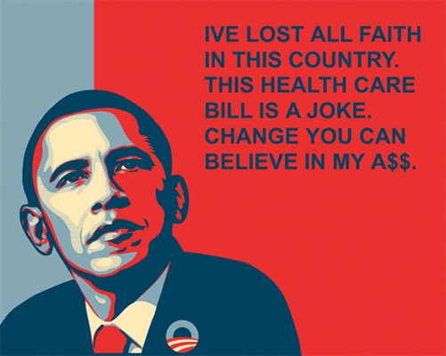

<!DOCTYPE html>
<html lang="en">
  <head>
    <meta charset="utf-8">
    <title>
    </title>
    <meta name="description" content="Jesse Fulton - Artist, Programmer, Hacker">
    <meta name="author">
    <link rel="icon" type="image/x-icon" href="/images/favicon.ico">
    <!-- Site last generated on the 30th of August, 2013.
    -->
    <link rel="stylesheet" href="/styles/main.css">
    <script type="text/javascript" src="//ajax.googleapis.com/ajax/libs/jquery/1.3.2/jquery.min.js"></script>
    <link rel="stylesheet" href="/scripts/jquery/plugins/jquery.lightbox-0.5/jquery.lightbox-0.5.css" media="screen" type="text/css">
    <script type="text/javascript" src="/scripts/jquery/plugins/jquery.lightbox-0.5/jquery.lightbox-0.5.min.js"></script>
    <script type="text/javascript" src="/scripts/slideshow.js"></script>
    <link rel="stylesheet" href="/style/index.css">
  </head>
  <body class="portfolio project">
    <header id="tabs">
      <ul class="navigation">
        <li id="menu-portfolio"><a href="/portfolio/"><span>Work</span></a></li>
        <li id="menu-blog"><a href="http://blog.jessefulton.com/"><span>Blog</span></a></li>
        <li id="menu-contact"><a href="/contact/"><span>Contact</span></a></li>
      </ul>
      <div id="headerlogo"><a href="/"><span>Home</span></a></div>
    </header>
    <div id="wrapper">
      <div id="main">
        <div class="breadcrumbs"><a id="breadcrumbs-present-and-future" href="/portfolio/">portfolio</a><span> &gt; @BarackObama Hears You</span></div>
        <div class="content row">
                  <header id="title">
                    <h2>@BarackObama Hears You <span class="date">(2009)</span>
                    </h2>
                  </header>
                  <div class="visuals">
                    <div id="media-space">
                      <div id="click-to-hover">click to expand</div><a id="main-media-link" href="#"></a>
                    </div>
                  </div>
                  <div class="item-content-wrapper no-role no-importance">
                    <div class="item-content description"><p>This is the second in a series of pieces analyzing what people on Twitter are saying to or about United States President, Barack Obama (@BarackObama on Twitter.) As new messages are displayed, the image of President Obama shows a slight emotional reaction based upon that message&#39;s emotional valence which is calculated by analyzing Tweets with the EmoTe&nbsp;<span class="caps">API</span></p>
<p>Pairing Shepard Fairey&#39;s iconic imagery with the wide variety of commentary coming from Twitter creates some interesting juxtapositions. The EmoTe <span class="caps">API</span> also has trouble dealing with certain language, especially “internet shorthand” and sarcasm. Occasionally, this causes the animated Obama to behave differently than expected, causing you to rethink what you really know about&nbsp;@BarackObama.</p>

                    </div>
                  </div>
                  <div class="meta">
                    <dl>
                      <dt>URL</dt>
                      <dd><a href="http://projects.jessefulton.com/playground/obama-nation/at-barack-obama-hears-you.html">http://projects.jessefulton.com/playground/obama-nation/at-barack-obama-hears-you.html</a></dd>
                    </dl>
                  </div>
        </div>
        <footer>
        </footer>
      </div>
    </div>
    <div class="clearfix"></div>
  </body>
</html>